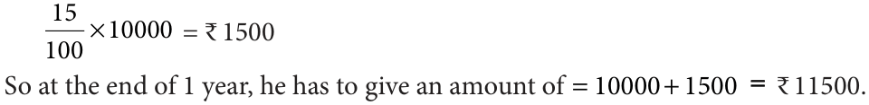
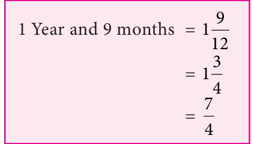

Selvam said that her sister took a loan from the bank to do her higher studies. The loan money that she borrowed from the bank is known as Sum or Principal. The borrower takes some time period to return the money to the bank. To use the money during a particular period of time, the borrower has to pay an additional amount to the bank. This is known as Interest. So to repay the money borrowed, the borrower has to add the principal and the interest.
That is, Amount = Principal + Interest
Interest is generally given in per cent for a period of 1 year per annum. Suppose the bank gives an amount of ₹ 100 at an interest rate of ₹ 8, it is written as 8% per year or per annum or in short 8% p.a. (per annum).
It means on every ₹ 100 borrowed, ₹ 8 is the required interest, to be paid for every one year. To understand this let us consider an example.
Selvam takes a loan of ₹ 10000 at 15% per year as rate of interest. Let us find the interest he has to pay at the end of 1 year.
Sum borrowed = ₹ 10000
Rate of interest \(= 15\%\) per year
This means if ₹ 100 is borrowed he has to pay ₹ 15 as interest.
So, for the borrowed amount of ₹ 10000, the interest for one year would be

Now we can write a general relation to find interest for one year. Take P as the principal or sum and \(r\) % as Rate per cent per annum. On every ₹ 100 borrowed the interest paid is ₹ \(r\). Therefore, on ₹ P borrowed the interest paid for 1 year would be \(\frac{P \times r}{100}\). If the amount is borrowed for more than 1 year then the interest is calculated for the total period during which the money is kept. This way of calculating interest for the total time period for the same Principal is known as simple interest.
We know that on a Principal of ₹ P at \(r\) % rate of interest per year, the interest paid for 1 year is \(\frac{P \times r}{100}\). Hence the interest 'I' paid for '\(n\)' years would be \(\frac{P \times n \times r}{100}\) or \(\frac{Pnr}{100}\).
The amount we have to pay at the end of '\(n\)' years is \(A = P + I\).
Example 2.24 Find the simple interest on ₹ 25,000 at 8% per annum for 3 years?
Solution
Here, the Principal (P) = ₹ 25,000
Rate of interest \((r) = 8\%\) per annum
Time \((n) = 3\) years
Simple Interest (I) \(= \frac{Pnr}{100}\)
\(= \frac{25000 \times 3 \times 8}{100} = 6000\)
Hence, Simple Interest (I) is ₹ 6,000.
Try these
- Arjun borrowed a sum of ₹ 5,000 from a bank at 5% per annum. Find the interest and amount to be paid at the end of three year.
- Shanti borrowed ₹ 6,000 from a Bank for 7 years at 12% per annum. What amount will clear off her debt?
Example 2.25 Kumaravel has paid simple interest on a certain sum for 2 years at 10% per annum is ₹ 750. Find the sum.
Solution
Given the rate of interest \((r) = 10\%\) per annum
Time \((n) = 2\) years
We know that Simple Interest (I) \(= \frac{Pnr}{100}\)
\(750 = \frac{P \times 2 \times 10}{100}\)
Therefore, Principal (P) \(= \frac{750 \times 100}{2 \times 10} = 3750\)
Therefore, Kumaravel has borrowed a sum of ₹ 3,750.
Example 2.26 In what time will ₹ 5,600 amount to ₹ 6,720 at 6% per annum?
Solution:
Principal (P) = ₹ 5,600
Rate \((r) = 6\%\) per annum
Amount = ₹ 6,720
Amount = principal + interest
Interest = Amount \(-\) Principal
\(= 6720 - 5600 = 1120\)
We know that Simple Interest (I) \(= \frac{Pnr}{100}\)
\(1120 = \frac{5600 \times 6 \times n}{100}\)
Therefore, \(n = \frac{1120 \times 100}{5600 \times 6} = 3\frac{1}{3}\) years.
Example 2.27 Sathish kumar borrowed ₹ 52,000 from a money lender at a particular rate of simple interest. After 4 years, he paid ₹ 79,040 to settle his debt. At what rate of interest he borrowed the money?
Solution
Principal (P) = ₹ 52,000
Time \((n) = 4\) years
Interest = Amount \(-\) Principal
\(= 79,040 - 52,000 = 27,040\)
We find the Simple Interest (I) \(= \frac{Pnr}{100}\)
Therefore, \(27040 = \frac{52000 \times r \times 4}{100}\)
Rate of interest he borrowed \((r) = \frac{27040 \times 100}{52000 \times 4} = 13\%\).
Example 2.28 A sum of ₹ 46,000 was lent out at simple interest and at the end of 1 year and 9 months, the total amount was ₹ 52,440. Find the rate of interest per year.
Solution

\(A = P + I\)
\(I = A - P\)
\(= 52440 - 46000\)
\(=\) ₹ 6,440
\(r = ?\)
we know that, \(I = \frac{Pnr}{100}\)
Therefore, \(6440 = \frac{46000 \times r \times \frac{7}{4}}{100}\)
\(6440 = 46000 \times r \times \frac{7}{4} \times \frac{1}{100}\)
\(r = \frac{6440 \times 4 \times 100}{46000 \times 7}\)
\(= 8\%\).
Example 2.29 A principal becomes ₹ 10,050 at the rate of 10% in 5 years. Find the principal.
Solution
\(A =\) ₹ 10,050
\(n = 5\) years
\(r = 10\%\)
\(P = ?\)
For calculating principal with the given data, we proceed as follows.
We know that,
\(I = \frac{Pnr}{100}\)
\(A = P + I\)
\(A = P + \frac{Pnr}{100}\)
\(A = P\left(1 + \frac{nr}{100}\right)\)
Therefore, \(10,050 = P\left(1 + \frac{10 \times 5}{100}\right)\)
\(= P\left(1 + \frac{50}{100}\right)\)
\(= P\left(\frac{150}{100}\right)\)
\(= P\left(\frac{3}{2}\right)\)
Therefore, \(P = 10,050 \times \frac{2}{3} = 3350 \times 2 = 6700\)
Hence, Principal = ₹ 6,700.
Think
In simple interest, a sum of money doubles itself in 10 years. In how many years it will get triple itself.